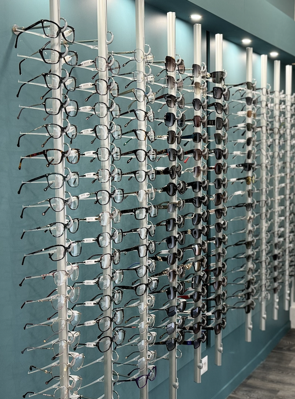
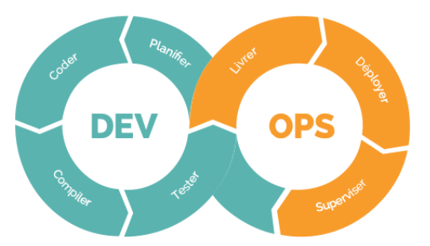

Front-end
Interfaces modernes & responsives
HTML/CSS, React, interactions JavaScript.

Étudiante en BTS SIO option SLAM
Alternante développeuse chez Harmonie Mutuelle
Objectif : poursuivre en Bachelor Développement Web & IA puis Master afin d'évoluer vers un poste de développeuse confirmée.
Je m'appelle Kamelia, étudiante en BTS SIO option SLAM. Passionnée par le développement informatique, je m’investis dans la conception d’applications modernes et performantes.
Lors de ma première année, j’ai occupé le poste de chargée de paramétrage SI en
alternance chez UCPA, où j’ai acquis une compréhension approfondie des systèmes d’information.
En deuxième année, j’ai évolué vers un poste de développeuse chez Harmonie Mutuelle,
ce qui m’a permis de renforcer mes compétences techniques en développement.
À l’issue de mon BTS, je souhaite poursuivre mes études en Bachelor Développement Web & IA afin de me spécialiser dans le développement logiciel et acquérir des compétences avancées en informatique.
UCPA (2024–2025)
Chargée de paramétrage SI
Harmonie Mutuelle (2025–2026)
Développeuse
Voici une sélection de mes projets réalisés dans le cadre de ma formation en BTS SIO SLAM, incluant des développements web, des bases de données, et ma veille technologique

Développement Web


Année : 2024
Description du projet
Dans le cadre de ma formation BTS SIO option SLAM, j'ai conçu et développé un site vitrine pour un magasin d’optique. Ce site a pour objectif de mettre en valeur les produits et services proposés par le magasin tout en facilitant la prise de contact des clients. Il est entièrement responsive et propose une navigation claire et intuitive pour améliorer l’expérience utilisateur.
Le site contient plusieurs sections : une page d’accueil présentant le magasin et ses valeurs, une galerie de modèles de lunettes, une page dédiée aux services (réparation, contrôle de vue, conseils personnalisés) ainsi qu’un formulaire de contact permettant aux visiteurs de prendre rendez-vous ou de demander des informations supplémentaires.
Ce projet m’a permis d’approfondir mes compétences en développement front-end, notamment sur la structuration HTML, la mise en forme et l’adaptabilité avec CSS, ainsi que sur les interactions dynamiques en JavaScript. J’ai également porté une attention particulière au design pour qu’il soit moderne et professionnel, correspondant à l’image d’un commerce de proximité spécialisé dans l’optique.

Application


Année : 2026
Description du projet
L’application AP2 Bibliothèque est une solution développée en Java permettant la gestion des emprunts et des retours de livres. Elle propose une interface destinée aux adhérents et aux bibliothécaires afin de faciliter la consultation du catalogue, la gestion des profils utilisateurs et le suivi des ouvrages empruntés.
Ce projet a été réalisé dans le cadre de ma formation afin de mettre en pratique la programmation orientée objet ainsi que la gestion des données dans un contexte applicatif concret. L’application s’appuie sur des classes métiers comme Adhérent et Livre, permettant de structurer les données et les traitements.
Le projet s’appuie sur une base de données relationnelle permettant de gérer les livres, les auteurs et les adhérents. La structure de la base facilite le suivi des emprunts et l’association entre les ouvrages et leurs auteurs.
Ce projet m’a permis de consolider mes compétences en développement Java et en gestion des données. Il illustre la conception d’une application orientée métier reposant sur une organisation claire des classes, des fonctionnalités de gestion et une interaction avec une base de données.
Vous pouvez consulter la fiche descriptive complète du projet :
📄 Consulter la fiche du projet (PDF)
veille


Année : 2025/2026
Description du projet
Dans le cadre de ma formation en BTS SIO option SLAM, j’ai réalisé une veille technologique sur le domaine du DevOps. Le DevOps est une approche qui vise à améliorer la collaboration entre les équipes de développement (Development) et les équipes d’exploitation (Operations) afin d’automatiser et d’optimiser le cycle de vie des applications.L’objectif de cette veille était de comprendre les pratiques modernes utilisées dans le développement logiciel, notamment l’intégration continue (CI), le déploiement continu (CD), l’automatisation des infrastructures et l’utilisation de conteneurs. Ces méthodes permettent de livrer des applications plus rapidement, de manière plus fiable et avec une meilleure qualité.
Ma veille s’est organisée autour de plusieurs axes :
Pour réaliser cette veille, j’ai utilisé plusieurs sources d’informations technologiques, des articles spécialisés et des plateformes de veille afin de suivre les évolutions du DevOps et les nouvelles pratiques utilisées dans l’industrie du logiciel.
Cette veille technologique m’a permis de mieux comprendre les méthodes modernes de développement et de déploiement des applications. Elle m’a également permis de découvrir l’importance de l’automatisation, de la gestion des versions et des pipelines d’intégration continue dans les projets informatiques actuels.
Ces connaissances sont particulièrement utiles dans le cadre du développement d’applications web et de projets logiciels, notamment pour améliorer la qualité, la maintenance et la rapidité de mise en production des applications.

Développement Web


Année : 2026
Description du projet
Cette application web permet de gérer une liste de tâches de manière simple et interactive. Elle a été développée afin de mettre en pratique les bases du développement web et la manipulation du DOM avec JavaScript.
L’utilisateur peut ajouter de nouvelles tâches, les supprimer ou les marquer comme terminées. L’interface se met à jour dynamiquement sans recharger la page.

Application web


Année : 2026
Application Web — réservation
Application web inspirée des plateformes de réservation de transport. Les utilisateurs peuvent se connecter, consulter les véhicules disponibles et effectuer une réservation. Une interface administrateur permet de gérer les disponibilités et les informations associées.
Développement Web
Année : 2024/2025
Description du projet
Ce projet est une application console en Java permettant de créer un carnet de contacts. L’utilisateur peut saisir les informations d’un contact, notamment le nom, le prénom et le numéro de téléphone. Ces informations sont ensuite enregistrées dans un fichier texte afin de conserver les contacts de manière persistante
L’application repose sur une architecture simple composée de deux classes principales :
Applications
Année : 2025/2026
Application de gestion scolaire
Application web développée avec Spring Boot permettant de gérer les informations académiques d’un établissement. La plateforme permet aux étudiants de consulter leurs notes et leurs cours, tandis que les enseignants peuvent gérer leurs classes et publier des résultats.
Voici un aperçu des compétences que j'ai développées durant ma formation de BTS SIO SLAM, ainsi que mes connaissances techniques.
HTML/CSS, React, interactions JavaScript.
Services, API REST, scripts, maintenance.
Conception, SQL, requêtes, administration basique.
Git, CI/CD, Linux.
Je réalise une veille sur le DevOps afin de comprendre les pratiques qui améliorent la qualité, la sécurité et la rapidité des déploiements.
Réduire les erreurs, automatiser les livraisons et fluidifier la collaboration Dev / Ops.
Docs officielles (Docker/K8s/GitHub), retours d’expérience, newsletters DevOps et suivi des releases.
Appliquer des workflows fiables (tests, pipelines, déploiements multi-env). En entreprise : déploiements via Copado (Dev → Recette → Prod).
Si vous souhaitez échanger à propos de mes projets, de mes compétences ou d’une opportunité de stage ou d’alternance dans le domaine du développement, vous pouvez me contacter via ce formulaire. Je serai ravie de discuter avec vous et de répondre à votre message.